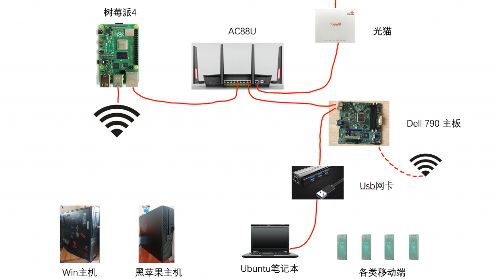
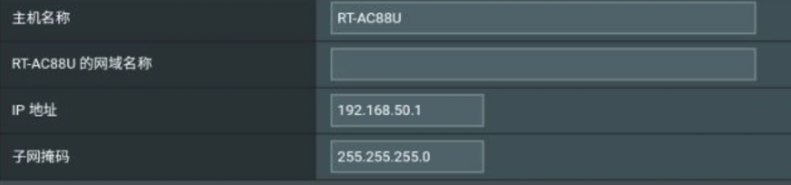
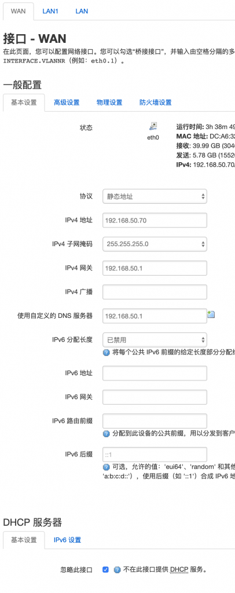
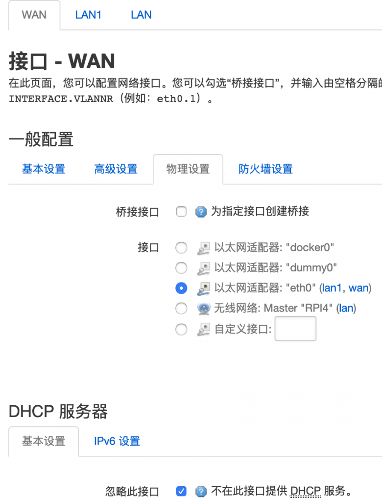
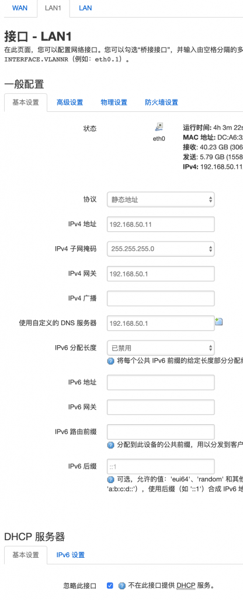
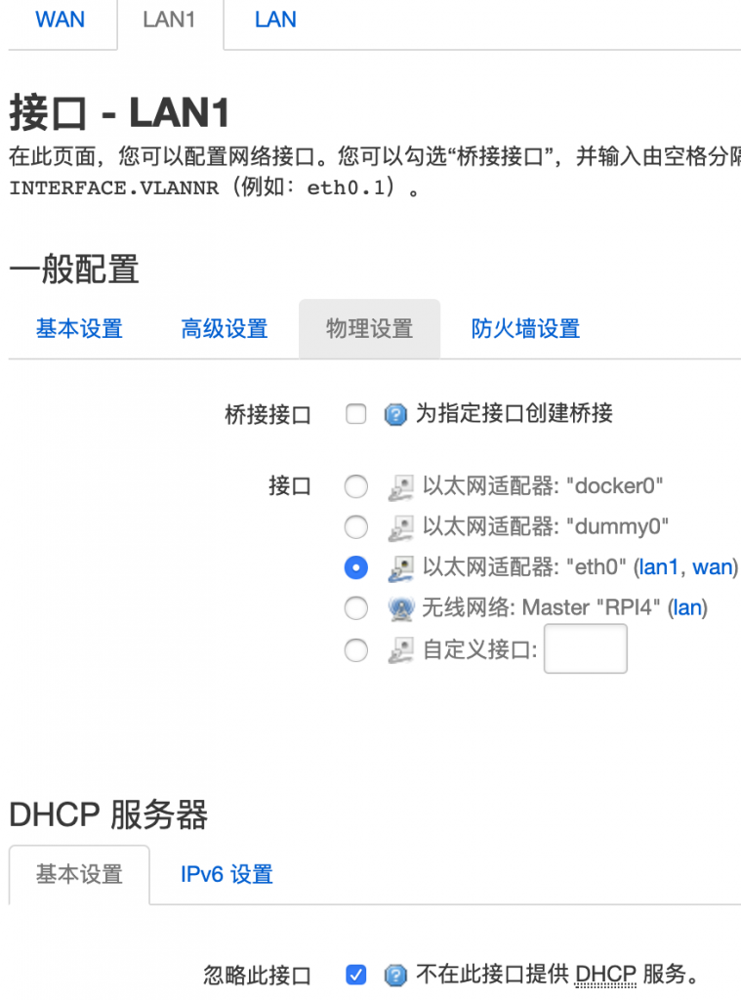
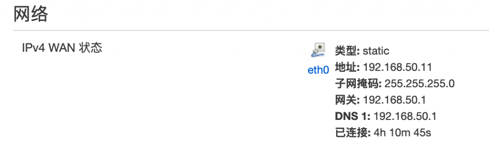
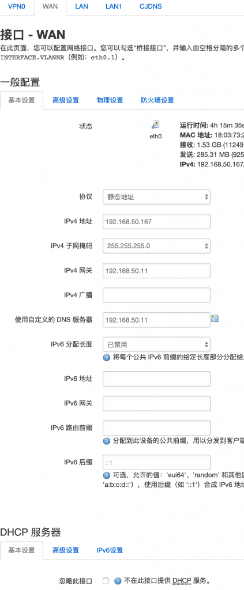
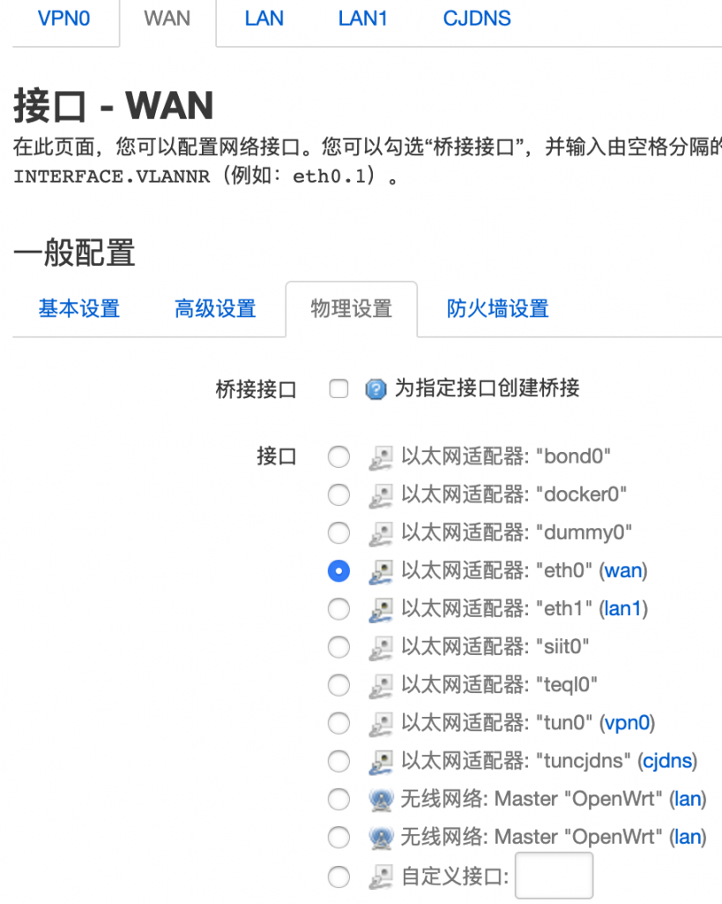

单臂路由 OpenWRT 配置参数
设备之间的连接如图，光纤经过光猫来到主路由，通过主路由wan口拨号，pi4接主路由lan口，科学上网。dell 790作为二级路由接主路由lan口(使用pi4的网络环境)。文章内容为openwrt的配置参数。
软路由准备从pi4换成x86版本的。但是网卡等还没有到齐，先使用单臂路由模式凑合用着。

主路由拨号内网IP为默认的：
IP：192.168.50.1
子网掩码：255.255.255.0

pi4只有单网口，但是wan口和lan口都需配置：
wan口配置参数：需要静态ip协议，任意不重复的IP一个，子网掩码，网关和自定义dns为主路由IP，关闭dhcp服务，取消桥接链接eth0（网口）。


lan口配置参数：这里lan口名设置为lan1，因为lan链接到pi4的无线接口。参数和wan口方法一样，IP不能重复。关闭dhcp，取消桥接并链接eth0.


完成后在状态->概况的网络部分，识别的IPv4 wan状态为设定的lan口的ip信息。

dell 790配置参数：
wan口配置参数：主路由的lan口和无线信号为正常上网，二级路由要访问单臂路由（pi4）的网络环境，需要将pi4作为服务器来访问。参数如下：静态协议，任意不重复IP地址，子网掩码，网关地址和dns是单臂路由（pi4）的IP地址，打开或关闭dhcp服务没有区别，取消桥接并链接eth0。

取消桥接并链接eth0

lan口配置参数：
不再描述。
openwrt更多相关内容：
https://tl8517.com/category/system/openwrt/
lede源码：
https://github.com/coolsnowwolf/lede